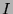
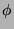
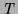

We first define interpretations and models then discuss the motivation for these definitions and the properties of models.
Conjunction and disjunction are defined as below -- the same as in Kleene's strong three-valued logic [KleeneKleene1952]:
|
|
That is, if the head is F, the body is F. Note that the traditional two-valued model theory is a special case of these definitions where the set of inadmissible atoms is empty. This definition of a model can be seen as giving a two-valued interpretation to an implication connective. It differs from Kleene's (weak and strong) logics, in which implications can have all three values. In [PrzymusinskiPrzymusinski1989], and [Apt and BolApt and Bol1994], an alternative definition of a model is given -- we refer to these as strong models:
Strong models significantly restrict intended interpretations and/or
programming style. For example, they do not allow interpretations where
instances of facts in the program are inadmissible. Our interpretation
of merge/3 is not a strong model due to clause instances such
as merge([],a,a). To make our intended interpretation a strong
model of the first clause a test such as sorted_list(Bs) would have
to be added. We have attempted to make our definition of a model as weak
as possible: it just avoids the two classes of bugs discussed earlier.
The definitions of conjunction and disjunction follow the same principle.
For conjunction, the key question is whether
should equal  or
or  . A choice
of
. A choice
of  would be similar to strict type schemes in which
a conjunction containing an ill-typed atom is ill-typed, whether it
succeeds or fails. Programs are restricted so that all derivations
are well typed, not just successful ones (distinguishing between these
two cases cannot be done statically). The choice of
would be similar to strict type schemes in which
a conjunction containing an ill-typed atom is ill-typed, whether it
succeeds or fails. Programs are restricted so that all derivations
are well typed, not just successful ones (distinguishing between these
two cases cannot be done statically). The choice of  is
similar to less restrictive type schemes which only restrict successful
derivations; this is discussed further in [NaishNaish1992b]. It allows
runtime checking of types (or other assertions) to be supported.
The body of a clause instance can have checks which fail (have truth
value
is
similar to less restrictive type schemes which only restrict successful
derivations; this is discussed further in [NaishNaish1992b]. It allows
runtime checking of types (or other assertions) to be supported.
The body of a clause instance can have checks which fail (have truth
value  ) as well as inadmissible calls, that is, the clause
is of the form
.
This would not be acceptable with the stricter definition of conjunction.
) as well as inadmissible calls, that is, the clause
is of the form
.
This would not be acceptable with the stricter definition of conjunction.
For disjunction, the key question is whether
 should equal
should equal  or
or  . In strict type schemes a
disjunction containing an ill-typed atom is ill-typed even if a well-typed
disjunct succeeds. Even in the less strict scheme of [NaishNaish1992b]
disjunctions must be implemented as separate clauses and each clause
must be ``type correct''. This is the reason we introduced disjunctive
clauses: by choosing
. In strict type schemes a
disjunction containing an ill-typed atom is ill-typed even if a well-typed
disjunct succeeds. Even in the less strict scheme of [NaishNaish1992b]
disjunctions must be implemented as separate clauses and each clause
must be ``type correct''. This is the reason we introduced disjunctive
clauses: by choosing  we can have a less restrictive
condition.
we can have a less restrictive
condition.
The structure of the set of all models is more complex than in the two-valued case. There are several model intersection properties of interest. The first relates models with the same set of inadmissible atoms:
This proposition also holds for strong models. It generalises the two-valued model intersection property (where  is the empty set, ). If there are two models with no true atoms then a similar result holds for the intersection of sets of inadmissible atoms. This is generalised in the following proposition (which does not hold for strong models).
Models exist with no inadmissible atoms (for example, all atoms are true) and with no true atoms (for example, all atoms are inadmissible), so from the two propositions above it follows that a least model (with respect to ) of the form exists and a least model (with respect to ) of the form exists. These two models have the same set of false atoms (just the role of true and inadmissible are swapped). These models are equivalent to the least two-valued model of the program.
If the set of false atoms is the same in two models, either the true atoms or inadmissible atoms can be intersected and the result is a model. In fact, any partitioning of the true and inadmissible atoms is a model:
Thus we have a set of (at least two) minimal models (with respect to /), all with the same set of false atoms (the false atoms of the least two-valued model).
This result is essentially the reason why treating inadmissible atoms as true results in correct declarative diagnosis of wrong answers. For models of the completion this result does not hold.
There is another natural partial ordering of three-valued interpretations known as the information ordering (we treat the third truth value as ``don't care'', but in some contexts ``don't know'' is appropriate).
The  -least model has all atoms inadmissible. The
-least model has all atoms inadmissible. The
 -least strong model has the least two-valued model as the
true atoms and all other atoms inadmissible, the same as the -least
model with and swapped. Atoms in the least two-valued model
are true in all strong models.
-least strong model has the least two-valued model as the
true atoms and all other atoms inadmissible, the same as the -least
model with and swapped. Atoms in the least two-valued model
are true in all strong models.